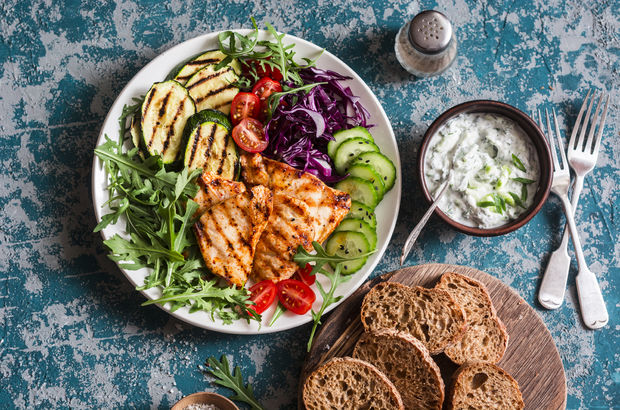

Akdeniz Diyeti
EN SAĞLIKLI DİYET: AKDENİZ DİYETİ
Spesifik bir durumu olmayanlar için en sağlıklı bulunan diyetin Akdeniz diyeti olduğunu söyleyen Beslenme ve Diyet Uzmanı Tuba Örnek, kilo verme sürecinde mevsimlik değil,kalıcı çözümlere odaklanılması gerektiğini vurguladı. Örnek, yaz dönemine girdiğimiz bu günlerde sağlıklı kilo vermek isteyenlere şu önerilerde bulundu:
Renkli, çeşitli ve bol miktarda sebze tüketilmeli.
Yaz meyveleri ölçüleri fazla kaçırabileceği için porsiyon miktarlarına dikkat edilmeli.
Lifli beslenilmeli. Sebze, meyvenin yanı sıra bakliyatlar ve tam tahıllı, kabuklu, rafine edilmemiş unlar ile yapılmış yiyecekler tüketilebilir.
Kırmızı et azaltılmalı, haftada 2 porsiyon tüketilebilir.
Balık tüketimi arttırılmalı, katı ve hayvansal yağlar azaltılmalı, zeytinyağı tüketilmeli.
Ekmek, pilav, makarna gibi karbonhidrat değeri yüksek yiyecek tüketimi azaltılmalı.
Süt ve süt ürünleri günde 1-2 porsiyon ile sınırlandırılmalı.
Probiyotikli ve fermente yiyecekler tercih edilmeli.
Akşam yemekleri hafif tutulmalı.
Günde 2 litre su içilmeli. Su, metabolizmayı canlandırmak, hücreleri yenilemek ve toksinleri atmak için çok önemli. Su içine nane, tarçın gibi ürünler eklenerek su içmeyi sevmeyenler için aroma sağlanabilir. Su, yağ yakıcı bir iksir olarak değerlendirilmemeli.
Fazla vücut yağlarının yanması en iyi sağlıklı ve size uygun olan beslenme ve fiziksel aktivite ile birlikte gerçekleşir. Haftada 0,5- 1,5 kg verilmesi tercih edilir. Spor olarak sevdiğiniz ve sürdürebileceğiniz sporu seçin. Her gün 45 dakikalık yürüyüş kilo vermeye destek olabilir.
“Uzun açlık” dediğimiz yöntem metabolizmayı canlandırmak uygunsa denenebilir. Örneğin akşam 20.00’den ertesi gün saat 12.00’ye kadar su, çay, kahvenin dışında yemek kesilebilir.